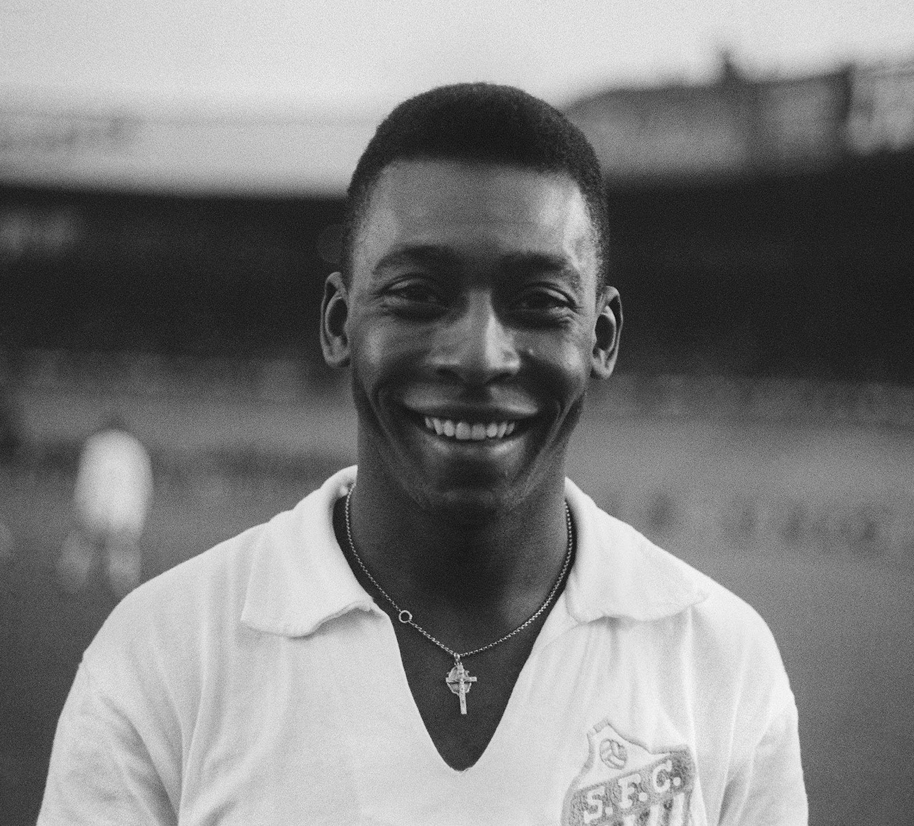
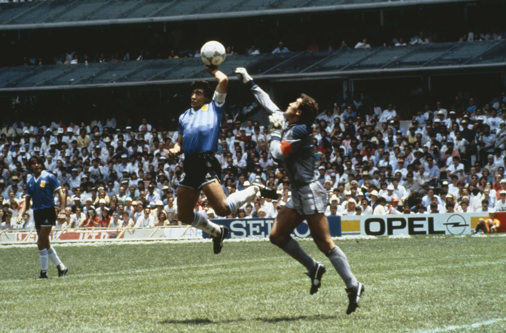
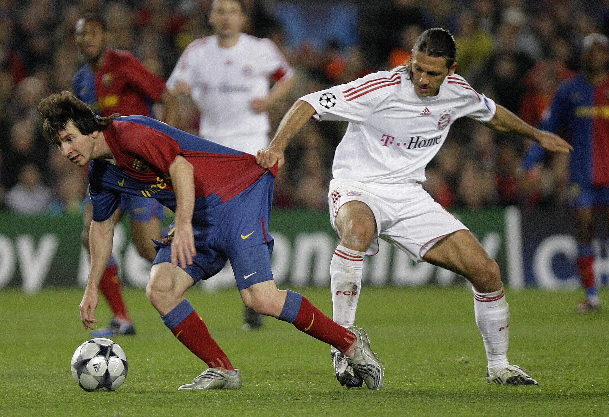
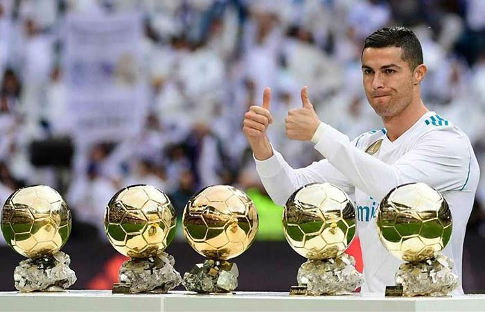
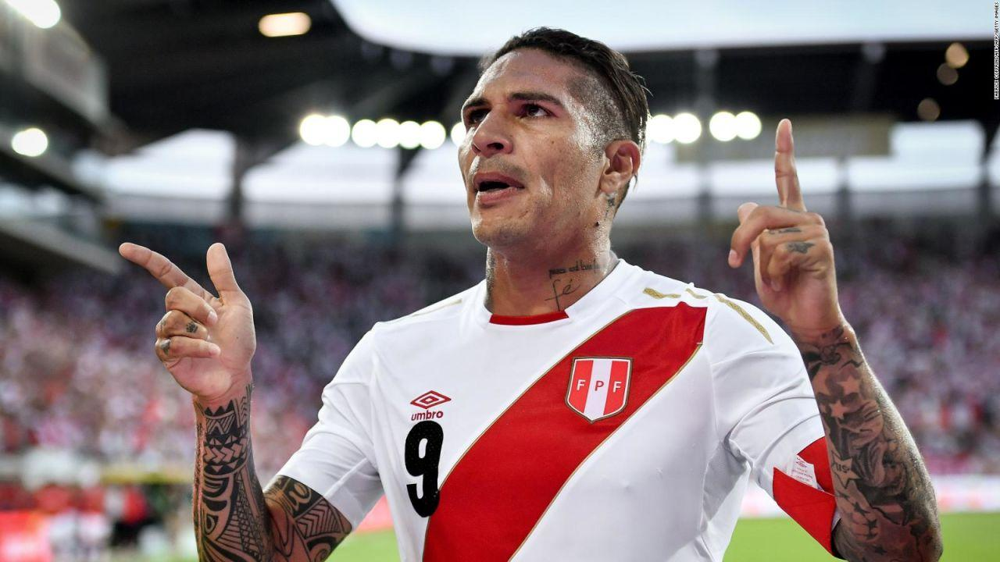
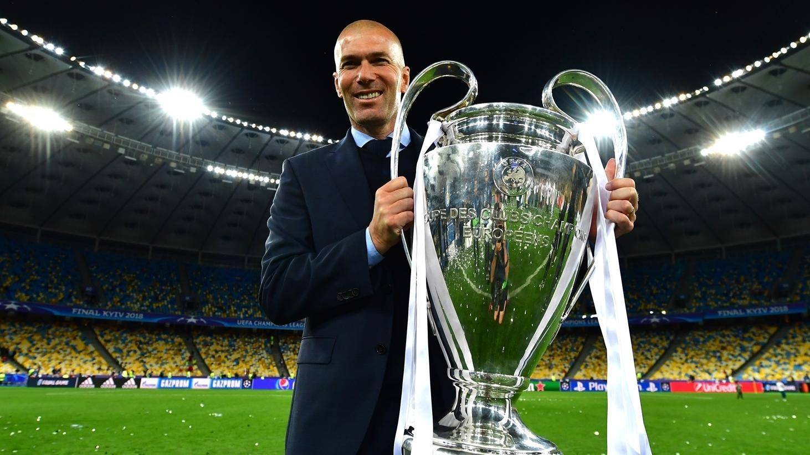
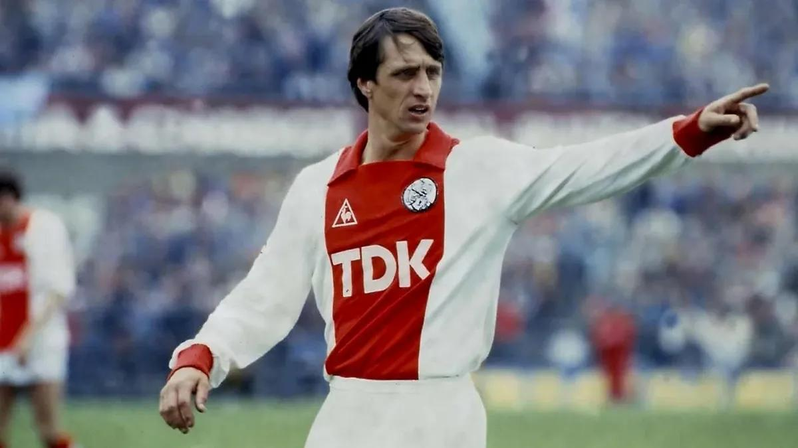

En esta pagina veremos cracks historicos del futbol latinoamericanos y europeos
Iniciamos este grandioso recorrdido por el crack que tuvo 3 copas del mundo.
Pelé, cuyo nombre completo fue Edson Arantes do Nascimento, nació el 23 de octubre de 1940 en Três Corações.
Fue un futbolista brasileño considerado uno de los mejores de la historia.
Jugó en Santos FC y ganó con Brazil tres Copas del Mundo (1958, 1962 y 1970), siendo el único jugador en conseguirlo.
Anotó más de 1,000 goles y dejó una huella histórica en el fútbol mundial. Falleció el 29 de diciembre de 2022 en São Paulo.

Diego Maradona, cuyo nombre completo fue Diego Armando Maradona, nació el 30 de octubre de 1960 en Buenos Aires.
Fue uno de los futbolistas más famosos y talentosos de la historia. Jugó en clubes como Boca Juniors, FC Barcelona y SSC Napoli.
Su mayor logro fue ganar la 1986 FIFA World Cup con Argentina, donde destacó por su gran talento y por el famoso gol conocido como “La Mano de Dios”
Falleció el 25 de noviembre de 2020, dejando un legado histórico en el fútbol mundial.

Lionel Messi, cuyo nombre completo es Lionel Andrés Messi, nació el 24 de junio de 1987 en Rosario. Es considerado uno de los mejores futbolistas de la historia.
Jugó gran parte de su carrera en FC Barcelona, donde ganó numerosos títulos, y luego pasó por Paris Saint-Germain FC y Inter Miami CF.
Su mayor logro con Argentina fue ganar la 2022 FIFA World Cup, consolidándose como una leyenda del fútbol mundial.
Ha ganado múltiples premios, incluyendo varios Balones de Oro, gracias a su talento, goles y asistencias.

Cristiano Ronaldo, cuyo nombre completo es Cristiano Ronaldo dos Santos Aveiro, nació el 5 de febrero de 1985 en Funchal. Es uno de los mejores futbolistas de la historia.
Jugó en clubes como Sporting CP, Manchester United FC, Real Madrid CF, Juventus FC y actualmente en Al Nassr FC.
Su mayor logro con Portugal fue ganar la UEFA Euro 2016.
Ha ganado varios Balones de Oro y es reconocido por su disciplina, velocidad, goles y récords históricos en el fútbol mundial.

Paolo Guerrero, cuyo nombre completo es José Paolo Guerrero Gonzales, nació el 1 de enero de 1984 en Lima. Es uno de los futbolistas más importantes en la historia del fútbol peruano.
Jugó en clubes como FC Bayern Munich, Hamburger SV, Sport Club Corinthians Paulista y Club Alianza Lima.
Su mayor logro con Peru fue liderar a la selección en la clasificación al 2018 FIFA World Cup, después de 36 años sin participar en un Mundial.
Es conocido como el “Depredador” por su capacidad goleadora y liderazgo dentro de la cancha.

Zinedine Zidane, cuyo nombre completo es Zinedine Yazid Zidane, nació el 23 de junio de 1972 en Marseille. Es uno de los mejores futbolistas de la historia.
Jugó en clubes como Juventus FC y Real Madrid CF.
Su mayor logro con France fue ganar la 1998 FIFA World Cup, donde fue figura clave.
También destacó por su elegancia, visión de juego y técnica, además de ganar la UEFA Champions League como jugador y entrenador.

Johan Cruyff, cuyo nombre completo fue Hendrik Johannes Cruijff, nació el 25 de abril de 1947 en Amsterdam. Fue uno de los futbolistas más influyentes de la historia.
Jugó en clubes como AFC Ajax y FC Barcelona.
Fue la gran figura de la selección de Netherlands en la 1974 FIFA World Cup, donde revolucionó el fútbol con el estilo llamado “Fútbol Total”.
Ganó varios Balones de Oro y también fue un exitoso entrenador, dejando una enorme influencia en el fútbol moderno. Falleció el 24 de marzo de 2016.
